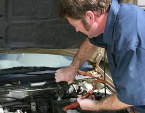
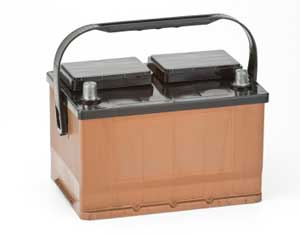
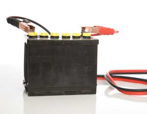
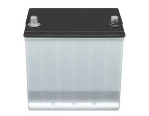

If your car won’t start, you may want to jump-start it so you can drive it to a mechanic or recharge the battery. But before you attempt to jump-start a car, you need to determine if the battery is really the problem. If the headlights or other lights still work, the battery isn’t dead, and jump-starting won’t help. Jump-starting the vehicle is also not the answer if the motor cranks, although the battery may be partially drained if the engine turns over sluggishly a few times.
Before you connect the jumper cables, get ready by following these steps:
Car batteries contain acid, so you can get an acid burn if you touch the liquid inside the battery. It will also eat holes in clothing. Wear safety goggles and gloves.
Your vehicle’s owner’s manual should have information on jump-starting (or tell you not to jump-start it). If you can’t find the battery easily, the manual will tell you where to attach the jumper cable clamps.
Don’t allow the clamps to touch each other while you are connecting them to or disconnecting them from the batteries.
Batteries create hydrogen, which can build up and, if ignited, explode. (Do not smoke while jump-starting a vehicle.) When an electrical circuit is being closed, there is a possibility of creating a spark. This procedure for connecting jumper cables minimizes sparks near the batteries:
Most jumper cables have red and black clamps, but if your set uses different colors, that’s OK. If you have cables with yellow and black clamps, for example, replace the word “red” in the above instructions with “yellow.”
Before starting either vehicle, be sure the jumper cables won’t be damaged by moving parts (fans, belts or pulleys) when the cars are running. Close vehicle doors so dome lights don’t draw power.
Run the engine of the vehicle that starts for about three minutes. Then try starting the vehicle with the dead battery. After it starts, disconnect cables in reverse order from when you connected them and drive the car for about 30 minutes to charge the battery - if you turn it off before the battery charges, you’ll have to jump-start it again. The other option is to drive it to a mechanic who can check it over or charge the battery for you.
If the vehicle doesn’t start after a few tries, give up; you may have a different problem. Disconnect the cables in reverse order.
|
ISTOCKPHOTO Although electrical shock is a possibility when jump-starting a car, you also need to be careful so that the battery doesn’t explode, spraying acid onto everyone and everything nearby. |
 ISTOCKPHOTO/LISA F. YOUNG Jump-starting a vehicle is a simple procedure, but following safety precautions and connecting and disconnecting the cables in the proper sequence are important. Use safety goggles, too. |
 ISTOCKPHOTO/CARLOS GAWRONSKI To check the water in a 12-volt battery such as this, pry off the rectangular caps. There should be three holes under each cap. |
|
 ISTOCKPHOTO/MARTI SALMELA Before jump-starting a battery such as this, unscrew the caps - they’re yellow on this battery - to be certain there’s enough water in the battery. |
 ISTOCKPHOTO/DON NICHOLS This battery is sealed, so you can’t add water to it. Before jump-starting this type of battery, examine it to make sure it’s not cracked or leaking. |
|